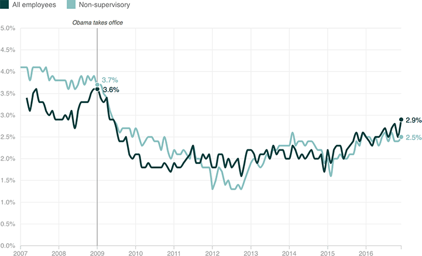

Wage Growth Is Inching Upward
Below is year-over-year average hourly wage growth, for both all employees and nonsupervisory workers (that is, the people who aren’t in charge). In the last couple of years, wages have trended upward for American workers, albeit slowly.
